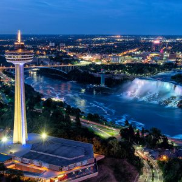

<!-- Página web sobre las Cataratas del Niágara (Canadá - EEUU) -->

<!DOCTYPE html>
<!-- Lenguaje de la página -->
<html lang="es"></html>
<html>
<head>
  <!-- Codificación de la página -->
  <meta charset="UTF-8">
  <!-- Título de la página -->
	<title>Las grandiosas Cataratas del Niágara</title>
  <!-- Estilos de la página (Referencia al archivo css de estilos para la página) -->
	<link rel="stylesheet" type="text/css" href="estilos.css"> <!-- Referencia al archivo css de estilos para la página -->
  <!-- Importar iconos de Font Awesome -->
  <link rel="stylesheet" href="https://use.fontawesome.com/releases/v5.8.1/css/all.css" integrity="sha384-50oBUHEmvpQ+1lW4y57PTFmhCaXp0ML5d60M1M7uH2+nqUivzIebhndOJK28anvf" crossorigin="anonymous"> <!-- Referencia a los iconos de Font Awesome (Se usa más que todo para no crear iconos muy complejos con spans)-->
</head>
<!-- Cuerpo de la página -->
  <body>
    <!-- Vinculo para volver al tope de la página -->
  <div id="top"></div>

  <input type="checkbox" id="menu-desplegable" class="menu-desplegable-check"> <!-- Crear checkbox para menú desplegable -->

  <!-- Crear icono del menú desplegable para pantallas pequeñas -->
  <a id="menu-icon">
    <span></span>
    <span></span>
    <span></span>
  </a>

  <!-- Crear menú desplegable para pantallas pequeñas -->
  <nav id="menu-desplegable">
    <ul>
      <li><a href="Ubicacion.html">Ubicación</a><br></li>
      <li><a href="Personajes que lo habitan.html">Personajes que lo habitan</a><br></li>
      <li><a href="Actividades.html">Actividades</a><br></li>
      <li><a href="Historia.html">Historia</a><br></li>
      <li><a href="Referencias.html">Referencias</a><br></li>
      <li><a href="Index.html">Pág. Principal</a><br></li><!-- Crear flecha para volver al tope de la página -->
      <a href="#top" class="top"><i class="fas fa-arrow-up"></i></a>
    </ul>
  </nav>

    <!-- Top de la página (Título contenido en un frame) -->
    <div class="Titulo">
      <header class="Titulo1">
          <h1>Las grandiosas <br>Cataratas del Niágara</h1>
          <h2>Un lugar donde se puede <br>apreciar la majestuosidad de la naturaleza</h>
      </header>
    </div>

  <section>
    <div class="Botones">
      <!-- Botones de navegación -->
      <!-- Cada botón redirecciona a una página diferente -->
      <button class="button" onclick="window.location.href='Ubicacion.html'">Ubicación</button>
      <button class="button" onclick="window.location.href='Personajes que lo habitan.html'">Personajes que lo habitan</button>
      <button class="button" onclick="window.location.href='Actividades.html'">Actividades</button>
      <button class="button" onclick="window.location.href='Historia.html'">Historia</button>
      <button class="button" onclick="window.location.href='Referencias.html'">Referencias</button>
      <button class="button" onclick="window.location.href='Index.html'">Pág. Principal</button>
    </div>
  </section>

  <h1>Conoce más del lugar al cual pertenecen las Cataratas del Niágara</h1>
  <hr>
  <h2 class="NOTA">NOTA: Dando click a una imagen puede ver la ubicación del lugar en cuestion en google maps.</h2>

  <div class="TitulosU">
    <h2><span style="color: rgb(0, 110, 255)">Los Grandes Lagos<b></b></span>
    </h2>
    <hr>
  </div>

  </section>
    <!-- Contenido de la página -->
    <div class="ImagenesU">
        <!-- Imagenes -->
        <figure class="Grandeslagos">
            <a href="https://www.google.com/maps/place/Grandes+Lagos/@44.8898771,-87.5686608,6z/data=!4m6!3m5!1s0x4d4563ce559b5571:0x57688a459e8cac9b!8m2!3d45.0522366!4d-82.4846115!16zL20vMDM1MTk"></a>
            <figcaption><b><span style="color:rgb(0, 110, 255)">Vista espacial de los grandes lagos</span></b><br>Los Grandes Lagos son un grupo de cinco grandes lagos de agua dulce ubicados en América del Norte. Estos lagos están situados en la frontera entre los Estados Unidos y Canadá, y son el resultado de la erosión glacial de hace miles de años. Según la página web del gobierno de Canadá, los Grandes Lagos son "uno de los cuerpos de agua más grandes y notables del mundo", y cubren una superficie de más de 244,000 kilómetros cuadrados.<br>Además, la página web de la Comisión Conjunta de los Grandes Lagos menciona que estos lagos son "una fuente importante de agua dulce, recursos naturales y hábitats únicos" que son esenciales para la economía y la biodiversidad de la región.<br>En resumen, los Grandes Lagos son una maravilla natural única que se extiende por ambos lados de la frontera de Estados Unidos y Canadá y son una importante fuente de recursos naturales y hábitats únicos. Como se cita en la página del gobierno de Canadá: "Los Grandes Lagos son una maravilla natural de importancia mundial".</figcaption>
        </figure>
        <hr>
        <div class="TitulosU">
          <h2><span style="color: rgb(0, 110, 255)">Las Gigantescas Cataratas<b></b></span>
          </h2>
          <hr>
        </div>
        <figure class="Niagaraareal">
            <a href="https://www.google.com/maps/place/Cataratas+Del+Niagara/@43.0828162,-79.0741629,15z/data=!4m6!3m5!1s0x89d34307412d7ae9:0x29be1d1e689ce35b!8m2!3d43.0828162!4d-79.0741629!16zL20vMGRwa18"></a>
            <figcaption><b><span style="color:rgb(0, 110, 255)">Vista aérea de las Cataratas del Niágara</span></b><br>Las Cataratas del Niágara son una de las atracciones turísticas más famosas de América del Norte. Ubicadas en la frontera entre Estados Unidos y Canadá, en el río Niágara, estas cataratas son un impresionante ejemplo de la fuerza y la belleza de la naturaleza.Las cataratas del Niágara se componen de tres cascadas diferentes: la cascada Horseshoe, la cascada americana y la cascada Bridal Veil. La cascada Horseshoe, la más grande de las tres, se encuentra en el lado canadiense de la frontera y es considerada una de las cataratas más impresionantes del mundo.</figcaption>
    </div>
    <hr>
	</section>
  <div class="TitulosU">
    <h2><span style="color: rgb(0, 110, 255)">Algunos otros lugares de interes<b></b></span>
    </h2>
    <hr>
  </div>
    <section>
      <table class="Tabla_ubicaciones">
        <div class="Contenido_ubicaciones">
            <tr>
                <!-- Imagenen 1 para la primer fila y primer columna -->
                <td>
                    <figure class="SkylonTower"><a href="https://www.google.com/maps/place/Torre+Skylon/@43.0850931,-79.079562,15z/data=!4m6!3m5!1s0x89d34311dacd5b47:0x506319cee1786d43!8m2!3d43.0850931!4d-79.079562!16zL20vMDRkYnZk">
                        </a>
                        <figcaption>Torre Skylon</figcaption>
                    </figure>
                </td>
                <!-- Texto referente a la primer imagen-->
                <td>
                    <p class="Skylon">La Torre Skylon es el restaurante más celebrado de las Cataratas del Niágara en Canadá, ubicado a 775 pies sobre las cataratas. Ofrece dos niveles de fina gastronomía, el famoso restaurante Revolving Dining Room y el asequible Summit Suite Buffet Dining Room. Además, cuenta con atracciones como la película 3D/4D "Legends of Niágara Falls" y el Family Fun Centre.<br>La experiencia de la Revolving Dining Room es extraordinaria, ya que rota silenciosamente 360 grados cada hora, brindando una vista siempre cambiante. Se estima que se pueden ver más de 125 km desde la sala de comida, lo que lo convierte en la vista más impresionante de las Cataratas del Niágara. Puedes hacer una reservación <a href="https://www.skylonreservations.com/">AQUÍ.</a></p>
                </td>
            <tr>
                <td>
                    <!-- Imagenen 2 para la primer fila y segunda columna -->
                    <figure class="StateParkI"><a href="https://www.google.com/maps/search/Niagara+Falls+State+Park/@43.0821821,-79.0678436,17z/data=!3m1!4b1">
                        </a>
                        <figcaption>Niágara Falls State Park</figcaption>
                </td>
                <td>
                    <!-- Texto referente a la segunda imagen-->
                    <p class="StatePark">El Parque Estatal Niágara Falls, situado en Nueva York, es un destino turístico popular que atrae a millones de visitantes cada año. Este parque, el más antiguo del país, cuenta con increíbles vistas de las famosas Cataratas del Niágara y una gran cantidad de actividades para disfrutar.<br>Los visitantes pueden tomar un paseo en barco en el Maid of the Mist, caminar por los senderos pintorescos del parque, hacer un picnic con vistas a las cataratas, visitar el Centro de Descubrimiento de Niágara para aprender más sobre la historia y la geología de la zona, o simplemente disfrutar de las impresionantes vistas desde los miradores y las plataformas de observación. Hay algo para todos en el Parque Estatal Niágara Falls.<br>Puedes conocer todas las actividades disponibles <a href="https://www.niagarafallsstatepark.com/niagara-falls-state-park">AQUÍ.</a>
                    </p>
                </td>
            </tr>
        </div>
      </table>
      <hr>
    </section>
    
  <div class="Contenido_ubicacion">
      <p class="Texto">Las Cataratas del Niágara son un conjunto de cascadas que se están ubicadas tanto en el país de Canadá como en Estados Unidos, cada uno tiene su parte de las Cataratas, estas a su vez hacen parte de la región de los Grandes Lagos que comprenden cinco lagos: Superior, Hurón, Erie y Ontario y se situan en la frontera entre Canadá y Estados Unidos; son mundialmente conocidos como el mayor grupo de lagos de agua dulce y popularmente se conocen como mares cerrados.</p>
  </div>

  <!-- Crear flecha para volver al tope de la página -->
  <a href="#top" class="top"><i class="fas fa-arrow-up"></i></a>

	<footer class="Footer">
		<p>Creado por: Jeferson Yesid Gonzalez Ortiz | Cod: 319019 | jegonzalezor@unal.edu.co | Curso: Gráfica Interactiva | Universidad Nacional de Colombia sede Palmira | Derechos reservados &copy; 2023</p>
	</footer>
</body>
</html>
